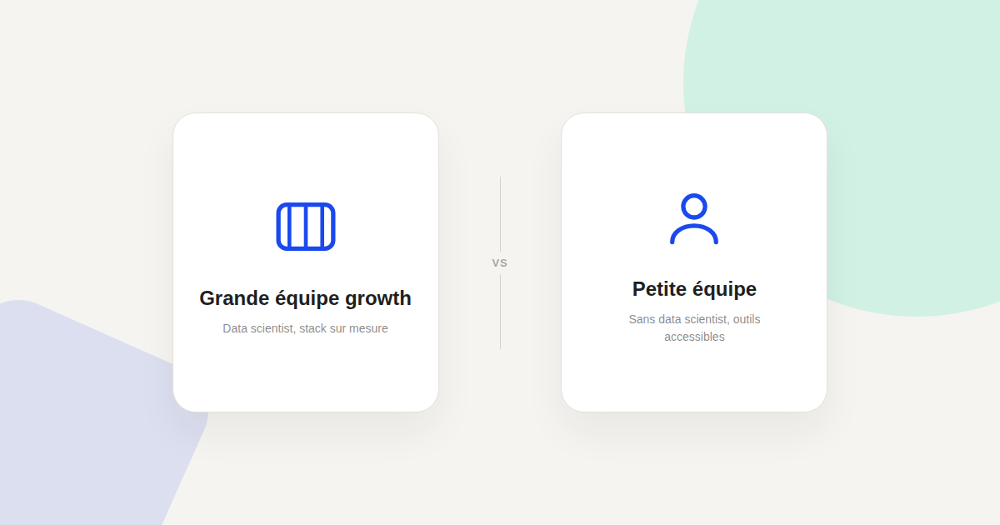
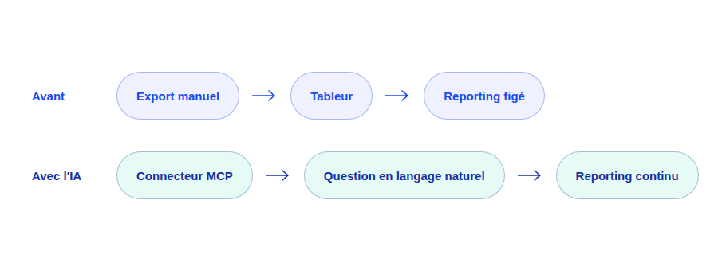

Growth marketing IA pour petites équipes : le playbook sans data scientist ni budget d'agence
Le growth marketing IA n'est pas réservé aux équipes avec un data scientist et un budget d'agence. Voici le playbook que j'utilise avec des petites structures qui n'ont ni l'un ni l'autre — et qui obtiennent des résultats malgré tout.

La plupart des ressources sur le growth marketing IA supposent une équipe avec un data scientist, un budget d'outils conséquent et un volume de données déjà important. Ce n'est pas la réalité de la majorité des petites structures que j'accompagne — et ce n'est pas non plus une raison de rester à l'écart de ces pratiques.
Ce qui change vraiment pour une petite équipe
Le vrai changement apporté par l'IA générative connectée à vos outils n'est pas la sophistication de l'analyse — c'est la disparition de l'étape d'export manuel qui, dans une petite équipe sans ressource dédiée à la donnée, était souvent le principal frein à un reporting régulier. Un connecteur MCP officiel permet de poser une question en langage naturel directement sur vos données Google Analytics ou Google Ads, sans étape intermédiaire.
Les 3 priorités pour démarrer sans budget d'agence
- Priorité 1 — Connecter, pas construire. Utilisez les connecteurs officiels déjà existants (voir le Kit MCP Marketing) plutôt que d'envisager un développement sur mesure, hors de portée du budget d'une petite structure.
- Priorité 2 — Un seul cas d'usage à la fois. Choisir un seul processus à améliorer avec l'IA (le reporting hebdomadaire, ou la rédaction de contenu) plutôt que de vouloir tout transformer en même temps, avec le risque de ne rien terminer correctement.
- Priorité 3 — Documenter ce qui fonctionne. Noter les prompts et les processus qui donnent de bons résultats, pour ne pas dépendre d'une seule personne qui « sait s'y prendre » avec l'outil.

Les pièges spécifiques aux petites équipes
Sous-traiter la stratégie à l'IA par manque de temps
Le manque de temps pousse parfois à demander à l'IA de définir elle-même les priorités growth, faute de disponibilité pour le faire soi-même. C'est l'inverse de ce qui fonctionne : sans cadrage stratégique humain, même court, l'IA produit des recommandations génériques qui ne tiennent pas compte des contraintes réelles de votre activité.
Vouloir répliquer un playbook de grande entreprise
Les études de cas mises en avant par les éditeurs d'outils IA concernent souvent des entreprises avec des volumes de données et des équipes bien plus importants. Un playbook conçu pour une grande organisation ne se transpose pas tel quel à une équipe de deux ou trois personnes — mieux vaut partir de vos contraintes réelles que d'un cas d'usage qui ne vous ressemble pas.
Ce qui est réellement accessible aujourd'hui
Concrètement, une petite équipe peut aujourd'hui, sans data scientist ni budget d'agence : connecter ses comptes Analytics et Ads à un assistant IA pour un reporting en langage naturel, automatiser les premiers jets de contenu à partir d'un brief structuré, et utiliser l'IA pour synthétiser rapidement des retours clients ou des tendances concurrentielles. Ce sont déjà, à elles seules, des heures récupérées chaque semaine — sans qu'un data scientist ait été nécessaire à aucune étape.
FAQ
Une petite équipe a-t-elle vraiment besoin de MCP pour démarrer ?
Pas forcément dès le premier jour, mais c'est ce qui évite le plus de travail manuel répétitif sur la durée. Il est possible de commencer avec de simples exports et copier-coller, mais le gain de temps réel vient de la connexion directe aux outils.
Quel budget prévoir pour démarrer le growth marketing IA sans agence ?
L'essentiel des outils cités (assistants IA, connecteurs officiels) ont une offre d'entrée accessible dès quelques dizaines d'euros par mois pour une petite équipe, sans commune mesure avec un budget d'agence.
Faut-il recruter avant de se lancer dans le growth marketing IA ?
Non : l'intérêt de cette approche pour une petite équipe est justement de ne pas nécessiter de recrutement spécialisé avant de démarrer. Le recrutement peut venir plus tard, une fois les premiers cas d'usage validés et le volume justifiant une ressource dédiée.
Envie d'un playbook growth IA adapté à la taille réelle de votre équipe ?
Pour aller plus loin, voir le Kit MCP Marketing, la page Agents IA marketing, et la page CRO.
Pour continuer sur ce sujet.